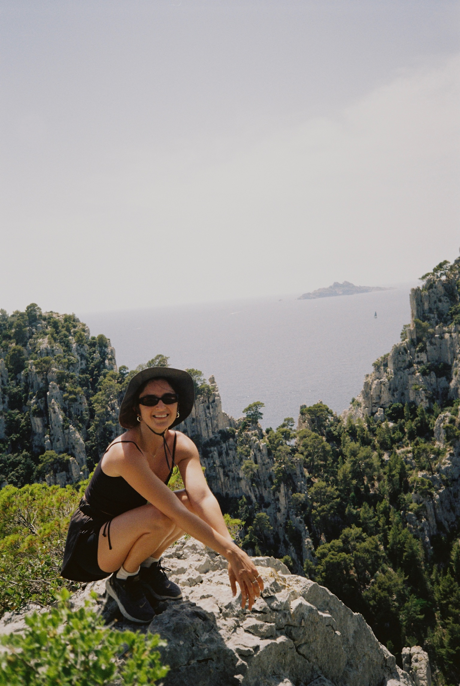

Where I started
I grew up in Bodrum, a harbour town on the Aegean under a medieval castle. Since then I have kept moving north: Izmir for high school, Istanbul for university and my first job, and now Berlin.

Hi, I'm [Your Name]. This is the route that brought me to HWR.
I grew up in Bodrum, a harbour town on the Aegean under a medieval castle. Since then I have kept moving north: Izmir for high school, Istanbul for university and my first job, and now Berlin.
Where I'm from, and still where I go to see the sea.
I moved to Izmir for high school. [One sentence on what this time taught you.]
I studied [your degree] in Istanbul. [One sentence on what you took from it.]
I started my career at PwC, working as [your role]. [One sentence on your biggest lesson there.]
In Berlin I work at BASF, now for more than five years. [One sentence on what you do there.]
Now I'm studying [your program] at HWR because [your reason].
I play tennis, hike whenever I can, travel as much as possible, and try new wines. I also run a book club in Berlin. These are three of my favourite hikes from the last few years.



Click a marker to see what happened there.